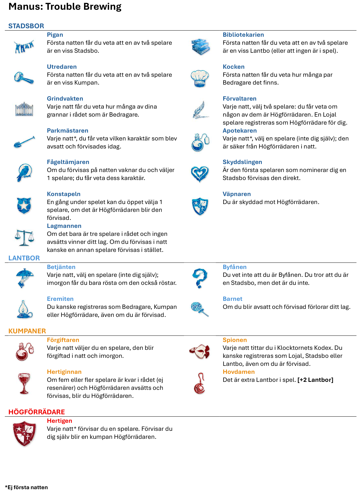

Förklaring av regler
Detta är en sammanställning som förklarar i huvudsak allt som nya spelare behöver veta för att kunna börja spela Counsil of the Clocktower.
Du kommer att få antingen ett rött eller ett blått karaktärskort. Om du får ett blått tillhör du de Lojala. Om du där emot får ett rött tillhör du Bedragarna. Målet i spelet om du är Lojal är att hitta och förvisa Högförrädaren. Om Högförrädaren förvisas vinner de Lojala. Målet i spelet om du är Bedragare är att förvisa och upplösa hela rådet. Om bara två spelare är kvar i rådet vinner Bedragarns.
Spelet är uppdelat i två faser: dagfas och nattfas. Under dagen pratar ni. Ni har alla en hemlig identitet, en karaktär från manuset. Generellt delar de Lojala spelarna med sig av allt de vet och försöker lista ut vem som är vem. De flesta Lojala spelare talar sanning, men vissa har anledning att dölja vem de är. Om du är Bedragare bör du definitivt dölja din karaktär! Det är bäst att låtsas vara en Lojal karaktär och sprida så mycket falsk information som du bara kan. Under natten blundar alla. Berättaren kommer att väcka vissa spelare så att de kan använda sin förmåga eller få någon typ av information. På natten är Berättaren tyst och kommunicerar endast med handsignaler.
De flesta av er kommer att förvisas på ett eller annat sätt. Men det kan vara en bra sak! I Klocktornets råd är förvisning inte slutet. Vissa spelare vill till och med bli förvisade, eftersom det är då de får sin information. Även om du är förvisad deltar du fortfarande i spelet, du får fortfarande prata, och du vinner eller förlorar tillsammans med ditt lag. Det här spelet innehåller är mycket information. Men en del av den kan vara falsk. Om du är berusad eller förgiftad har du ingen förmåga, men Berättaren kommer att låtsas som att allt är som det ska. Berättaren får bluffa, all den information du får kan vara felaktig, men du kommer inte veta om du är berusad eller förgiftad.
Till exempel: Om du är Byfånen tror du att du är en annan karaktär då du drog ett annat karaktärskort, och bara Berättaren vet att du egentligen är Byfånen. Eller om Giftaren förgiftar dig kan du fortfarande vakna på natten för att använda din förmåga, men den kommer inte att fungera.FYRA REGLER
Det här kan vara mycket information att ta in på en gång, så för att hålla det enkelt finns det bara fyra saker du behöver komma ihåg:
1) Du får säga vad du vill, när du vill. Det här är ett spel där man ska prata. Du kan prata öppet med hela gruppen eller ha privata samtal i avskildhet — det är helt upp till dig.
2) Inget fuskande. Försök alldrig smygtitta i Klocktornets Kodex, eftersom den innehåller alla spelarnas karaktärer och och status. Om du ser något du inte borde så förstör det nöjet för dig och för alla andra spelare.
3) Fråga Berättaren om vad du vill. Om du blir förvirrad, inte förstår hur din karaktär fungerar eller den du låtsas vara, om något händer på natten som du inte fattar, eller om du bara vill ha lite strategiråd… vad det än är, fråga bara. Berättaren är neutral, är till för att hjälpa dig förstå reglerna och ha roligt. Säg till när du har en fråga, så pratar får du prata med Berättaren privat så att ingen annan vet vad du undrade.
4) Kom ihåg, detta är bara ett spel. Spelet går ut på att bluffa och bedra så känner du redan nu att det är något går emot ditt samvete är det bättre att inte vara med alls.
NOMINERING OCH AVSÄTTNING
Under dagen kommer Berättaren att be om nomineringar. För att nominera en spelare säger du helt enkelt vem. Till exempel: “Jag nominerar Sven.” När en spelare blir nominerad röstar alla på om personen ska avsättas eller inte. Till exempel: Berättaren sträcker ut armen och peka på Sven och säger: “Omröstning, börjar nu.” Berättaren för sedan handen medurs, och om din hand är uppe när Berättaren kommer till dig räknas det som en röst. Är handen nere räknas det inte som en röst. Varje dag får du rösta på ingen eller så många spelare du vill, och den som får flest röster blir avsatt och förvisad. Spelaren måste få minst **50% av rösterna i rådet,** annars blir spelaren inte avsatt, inte heller vid oavgjort blir någon avsatt även om det fanns tillräkligt med röster. Om du blir förvisad är du fortfarande en viktig del av spelet. Du fortsätter att prata och ge tips, och du blundar under natten. Framför allt vinner eller förlorar du fortfarande tillsammans med ditt lag. Faktum är att spelet ofta avgörs av de förvisade spelarnas röster och åsikter. När du förvisas händer följande:
- Du förlorar din karaktärs förmåga
- Du får inte längre nominera
- Du har **endast en röst kvar** för resten av spelet — så använd den klokt
KARAKTÄRER (MANUS)
Dessa är de karaktärer som vi kommer att spela med i den 26 april 2026. **Tips:** Det är bra att försöka sätta sig in i varje karaktär något så det inte blir helt främmande när spelat börjar.